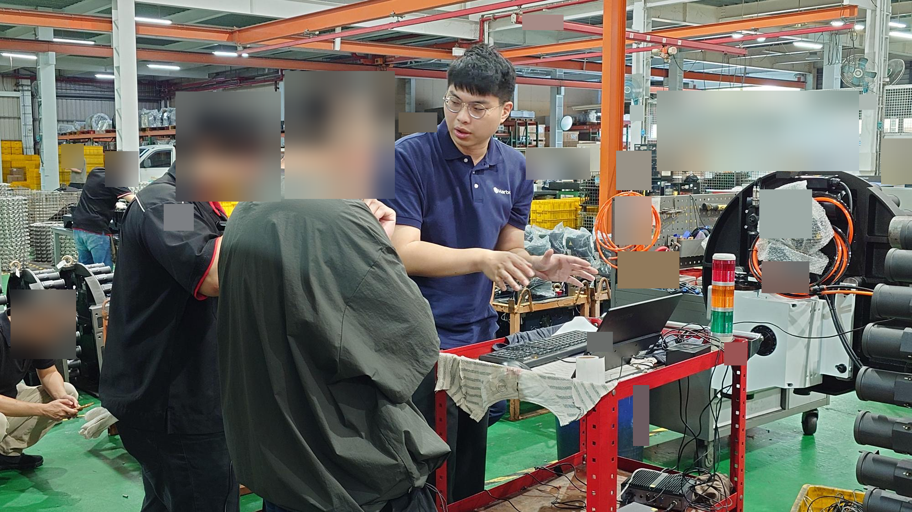

Harbor AI 2.0 的兩個產品方向沿用技術基礎：工業智慧監控平台持續觀測常駐設備，智慧設備出廠品質檢測平台則以同一套治具輪流量測不同受測件，各自有不同的使用者流程與交付需求。這是我第一個從客戶需求、規格、系統實作、UI/UX 設計與優化，一路主導到現場交付的完整專案。我使用 AI agents 推進開發與測試，整合工程夥伴負責的組件；對整體產品流程、設計取捨與交付負責。

關注長期狀態、趨勢與異常。
需要受測件身分、量測批次、基準比對與結果留存。
- 需求釐清 · 本人主持作業情境
採集、換機、重錄與工單銜接
- 規格與決策 · 本人主責產品流程
受測件、量測、判定、報告與驗收映射
- 系統實作 · 本人主導開發與 UI/UX 優化
使用 AI agents 開發、整合夥伴組件，依作業情境反覆調整
- 測試與現場交付 · 本人主導測試版本、手冊與教育訓練
交品質測試團隊檢驗；10 月 12 日赴現場示範並收集回饋

技術細節與驗證範圍
從客戶原話找到場景差異
主持作業流程與使用情境對齊，釐清多測點採集、基準重錄、插單與序號／工單銜接，把「判定合格」拆成可討論的使用步驟與待決事項。
把需求落成跨模組規格
對齊受測件身分、量測批次、資料關聯、判定及報告，串接平台、前端、採集與分析模組；讓對外功能清單、內部工項與驗收條件對得起來。
分開功能可測與判定有效
基本操作流程可先交付測試，判定門檻仍需現場資料校準。我主導規格到系統實作與測試的銜接，使用 AI agents 開發及修復，並與工程夥伴整合各自負責的組件；品質測試團隊提供獨立測試回饋。
讓操作流程收斂到使用者需要的事
初期介面規劃過於複雜，我透過需求釐清及與主管、客戶的反覆溝通，收斂操作流程並修正規格。我也負責 UI/UX 設計與優化，將 AI 產出的介面反覆對照真實作業步驟，讓受測件、基準、量測、判定與報告能順著使用者工作展開。
從交測走到現場說明
我主導補齊檢測鏈路、測試版本與操作手冊，交由品質測試團隊檢驗，並持續整合查詢、換件、人工複核及匯出。2026 年 10 月 12 日，我赴客戶現場進行第一階段驗收活動、示範及教育訓練，並帶回客戶回饋。
現場示範與教育訓練已完成；正式驗收結論、簽核及最新合併版本仍待確認。